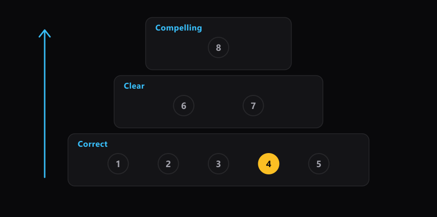

← All Kits · Excel Kit · Exploratory Data Analysis
Build a Dashboard in This Order: Correct, Then Clear, Then Compelling
This is the order a dashboard gets built in, and it will save you work you've already finished. Eight steps, grouped into three passes. Nothing gets made to look good until the number underneath it has been checked, so nothing you polish gets thrown away and polished again.
Here are the eight, and you can start using them on your next file. Load the data and name it. Label the rows. Make the pivot or chart. Check the numbers. Fix what the check caught. Fix the words. Fix the number formats. Make it land. Steps 1 to 5 are the correct pass. Steps 6 and 7 are the clear pass. Step 8 is the compelling pass.

Everything below comes from one build: an Excel dashboard over 82,956 Steam games, built in an afternoon on 2026-08-04. You can open the finished dashboard and the data behind it and follow along in your own copy.
- The eight steps, and what each one decides
- Why checking sits at step four
- The number that was wrong, and how it looked
- The three passes, and why you can't skip one
- What makes this hard to hold to
- The same eight steps in Tableau and Power BI
- Run it on your own file
- Why this works
- A cheat sheet
- The rest of the series
The eight steps, and what each one decides
Before you read the list, name the step you'd normally leave until last. Hold that answer.
Each step ends with something decided. That's what makes it a step rather than a stretch of work. If you can't say what a step decided, you haven't finished it.
| Step | What you do | What it decides |
|---|---|---|
| 1 | Load the data and give it a name | What your formulas point at, and whether they survive new rows |
| 2 | Label the rows into groups | What you're comparing. Every later count reads this label |
| 3 | Make the pivot or the chart | Which numbers you're going to show |
| 4 | Check the numbers against a source you trust | Whether steps 2 and 3 did what you thought |
| 5 | Fix what the check caught | Nothing new. It puts steps 2 and 3 back where you thought they were |
| 6 | Fix the words: headers, labels, titles | What a reader thinks each number is |
| 7 | Fix the number formats | How fast a reader can read a number without misreading it |
| 8 | Make it land: layout, sorting, emphasis, the claim | The one thing the page is arguing |
Step 1 is worth a note, because it's the step people skip fastest. Naming the data means turning the range into an Excel Table with a name, so a formula reads [@TotalReviews] instead of H2. That's article 3 of this series. Before any of it, look at what you loaded: how to explore a dataset before you trust it covers the first pass over an unfamiliar file.
Why checking sits at step four
Step 4 exists to settle one question, and the question is worth naming before the work.
The question. Did the pivot I just built count what I think it counted?
Answer one. Yes. The label from step 2 landed on the right rows, and the pivot counted rows. If that's true, every chart built on this pivot is safe, and the rest of the afternoon is design.
Answer two. No. Something in step 2 or step 3 quietly did a different job. If that's true, every chart, every headline number and every sentence you write after this point is wrong, and none of them will look wrong.
What decides it. A count you worked out separately, sitting in a cell of its own beside the data, written before you looked at the pivot.
Why it matters. Excel doesn't crash when it's wrong. It returns a confident number. Between you and presenting that number in a meeting, the only thing standing there is a check you wrote twenty minutes earlier.
Say out loud, before you read the next section, why a wrong number in a pivot is harder to spot than a wrong number in a formula. The answer is the whole reason step 4 is a separate step.
The number that was wrong, and how it looked
In the Steam build, step 3 made a pivot of the three row groups: games that were loved and found, games that were loved and stayed hidden, and everything else. The pivot was asked for each group as a share of the total.
It said the loved-and-found group was 0.45% of all games.
The check said 0.71%.
Look at those two numbers. Both are small. Both are plausible. Neither is round enough to look made up. Nothing on the screen was red, no cell showed an error, and the chart drawn from that pivot looked fine.
The cause was one word in the pivot's corner: Sum of AppID. Dropping a column into the Values area makes Excel pick a way to summarize it, and for anything numeric it picks Sum. AppID is a number the way a phone number is a number. Excel added up the ID codes of 590 games and reported the share of a total made of ID codes. That's article 6 of this series.
The correct figure is a count: 590 of 82,956 games, which is 0.71%. Fixing it took ten seconds in Value Field Settings. Then the same fault turned up in three more fields on the same page. One check at step 4 caught all four.
The check itself was small. Two cells beside the labelled column, holding a count of each group, worked out before the pivot existed. 765 loved games in total. 175 that stayed hidden, 590 that got found. If that middle cell had read 174, the label from step 2 was wrong, and everything after it was wrong too.
Now picture your own last spreadsheet, the one you sent to somebody. Which number on it did nobody ever work out a second way? That's where this lands.
The counts also have to add up. 175 plus 590 plus 82,191 outside the loved group is 82,956, which is the row count of the file. An addition check like that costs one cell and catches a whole family of mistakes at once.
The three passes, and why you can't skip one
The eight steps group into three passes, and the group names are the reason the order holds.
- Correct is steps 1 to 5. The numbers are what you say they are.
- Clear is steps 6 and 7. A reader knows what each number is and can read it without stopping.
- Compelling is step 8. The page argues one thing, and the eye lands on it first.
You can't skip a pass. A beautiful dashboard built on a wrong number is worse than an ugly one carrying the same error, because the polish is the part that persuades people to trust it. Clean formatting, a sorted bar chart and a confident title are all signals of care, and a reader reads them as evidence that the arithmetic was cared for too.
The cost of running the passes out of order isn't wasted time. It's thrown-away work. Polish applied to a wrong number gets discarded twice: once when you fix the number, and again when you redo the polish that the fix undid. A chart you styled for ten minutes and then rebuilt cost twenty.
What makes this hard to hold to
Formatting is the part of this work that feels like progress. A chart getting cleaner is visible, immediate and pleasant. Checking a number feels like doubt, it produces nothing you can look at, and most of the time it tells you what you already believed.
That's why the order has to be written down instead of felt. A rule you follow when you feel like it is a rule that vanishes on the afternoon you're tired, which is the afternoon you need it.
There's a second reason, and it's mechanical. A number on screen is an anchor. Once you've seen 0.45%, you start reasoning from it, and the question quietly changes from "is this right?" to "could this be right?" Almost anything could be right. So the check goes the other way around: work out what the number should be, write it down, and only then look at what the pivot says. Predict, then check. A check you read after the fact confirms whatever is already on the screen.
Keep the checks in the file when you send it. Two cells labelled CHECK beside the data cost nothing and tell the next person that somebody looked. That habit belongs with writing down what your data can't tell you, which is the same move applied to the things a check can't catch.
The same eight steps in Tableau and Power BI
The steps aren't Excel features. They're the order the work has to happen in, and they survive the tool change.
| Step | Excel | Tableau | Power BI |
|---|---|---|---|
| 1. Load and name | Excel Table named Games | Data source, with fields renamed | Power Query, table named |
| 2. Label the rows | An added column of labels | A calculated field, or a set | A calculated column |
| 3. Make it | PivotTable, PivotChart | Drag to rows, columns, marks | Visual, with fields dropped in |
| 4. Check | COUNTIF in a spare cell | A text table of the same counts | A card visual of the same counts |
| 6 and 7. Words and formats | Header text, Custom formats | Field aliases, number format | Field names, format pane |
| 8. Make it land | Sort, mute, one accent color | Same | Same |
That's what makes this a method rather than an Excel tip. Learn the order once and it comes with you.
Run it on your own file
Take a spreadsheet you already have, one with a few hundred rows and a question attached to it.
- Write the check before you build anything. One cell: how many rows should be in the group you care about? Work it out with a filter and the status bar count, and type the number in as a label. Now it's a prediction, not a confirmation.
- Build the pivot, then read the corner. Before you look at any figure in the body, read what the pivot calls its value. Sum of something that isn't money or quantity is the signal to stop.
- Compare, out loud. Say both numbers. Yours and the pivot's. If they differ, you have a bug, and you know it's in the last two steps rather than somewhere in nine.
- Only now touch a font. Headers, then number formats, then layout. In that order, and not before step 3 has passed step 4.
- Write the claim last. One sentence with a number in it, describing what the page found. If you can't write it, the page is a pile of charts and step 8 isn't done.
Retrofitting a finished dashboard to this order is miserable and you'll abandon it halfway. Do it on the next build instead, and on the current one just add the checks.
If you have paper nearby, draw three boxes, one on top of the other, and write the step numbers into them. That picture is the whole method, and drawing it once is worth more than reading it twice.
Why this works
Two findings sit under this, and both are about the same thing: you can't spot an error by looking harder.
The first is the base rate of spreadsheet errors. Raymond Panko's review of the audit studies found that errors occur in a few percent of cells, which means that for a spreadsheet of any size the question isn't whether there's an error but how many there are (Panko, 1998, Journal of Organizational and End User Computing, 10(2), 15-21). A later review across the field reached the same place from more studies (Powell, Baker & Lawson, 2008, Decision Support Systems, 46(1), 128-138). A number is not made correct by having been produced carefully. It's made correct by having been produced twice.
The second is anchoring. Tversky and Kahneman showed that people asked to judge a quantity adjust from whatever number they were shown first, and adjust too little, even when they know the starting number is arbitrary (Tversky & Kahneman, 1974, Science, 185(4157), 1124-1131). That's why the check is written before the pivot is read. Once 0.45% is on your screen, your judgment of whether 0.45% is plausible has already been shaped by 0.45%.
This is also the honest reason for the note at the top. That number came out wrong four separate times in one afternoon, in a build being done slowly, on purpose, by someone writing down every step as he went. The order isn't a virtue. It's what catches that.
The Excel Kit covers the formulas each step runs on, with worked examples and a mock exam. The order above is yours either way. The kit is where you get the reps.
Open the Excel Kit →A cheat sheet
| Pass | Steps | Done when | Skipped when |
|---|---|---|---|
| Correct | 1 to 5 | Every headline number has a second number beside it that agrees | You start choosing fonts before the pivot's corner has been read |
| Clear | 6 and 7 | A stranger can name each number without asking you | A header still says Sum of something, or a percent is showing eight decimals |
| Compelling | 8 | You can write the finding as one sentence with a number in it | The page has more than one thing shouting |
Every article below comes out of one step in the build above, in build order. Links go live as each one publishes.
- Label your rows before you chart them
- Check your work before anyone else does
- Name your data so your formulas stop breaking
- The dialog that quietly deletes your zip codes
- A pivot table is a question, not a report
- Excel just summed your ID numbers and said nothing
- Percentages are the whole story and Excel hides them
- Show the unit without breaking the number
- Pick the chart your number already decided
- Chart design basics: take things away, then point
- One row at a time, or all rows at once
- Four numbers across the top do more than four charts
- Sort your bar chart or it means nothing
- The finding that was just your own definition
- The names came in as gibberish and Excel said nothing
- Make one control drive every chart on the page
- Write the sentence your dashboard is arguing
References
- Panko, R. R. (1998). What we know about spreadsheet errors. Journal of Organizational and End User Computing, 10(2), 15-21.
- Powell, S. G., Baker, K. R., & Lawson, B. (2008). A critical review of the literature on spreadsheet errors. Decision Support Systems, 46(1), 128-138.
- Tversky, A., & Kahneman, D. (1974). Judgment under uncertainty: Heuristics and biases. Science, 185(4157), 1124-1131.
What's the step you named at the start, the one you'd normally leave until last? Was it step 4?